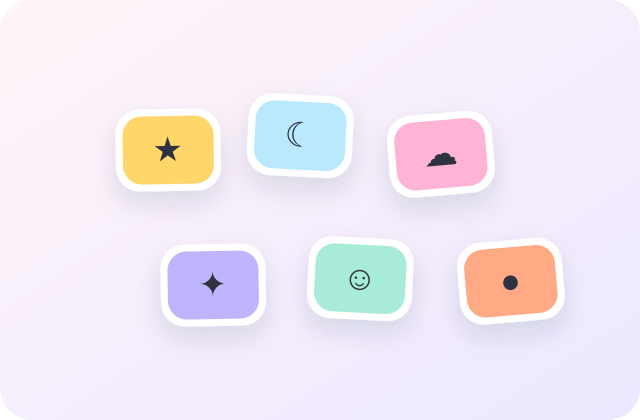
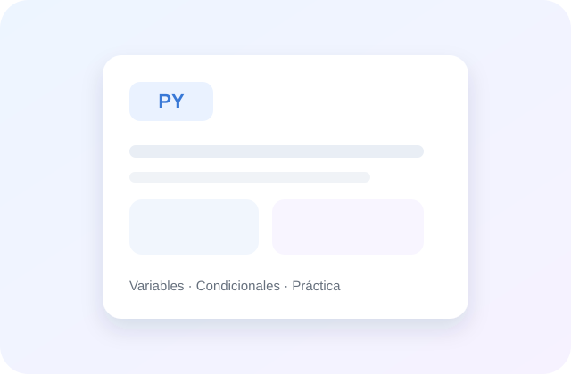
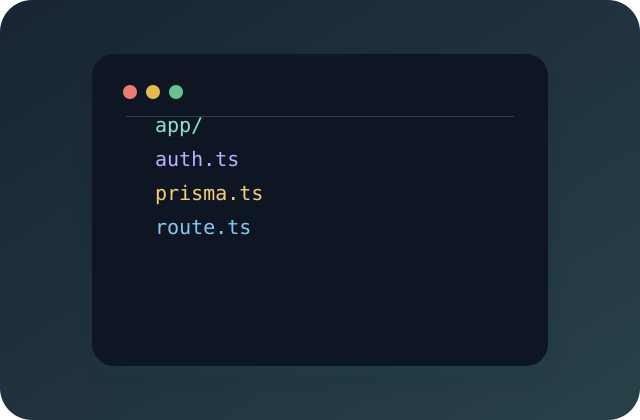
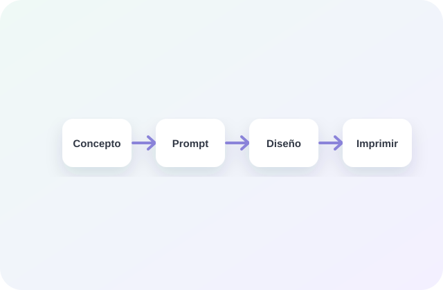
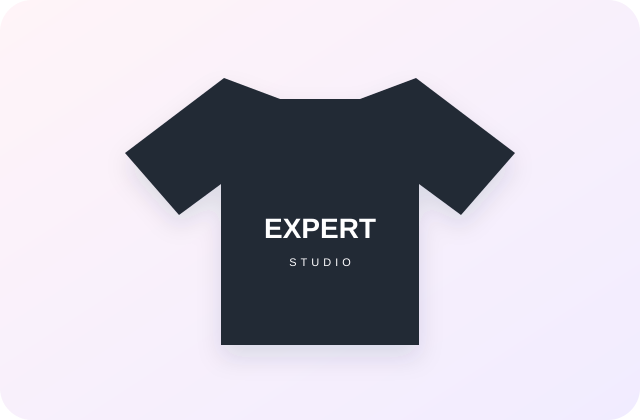
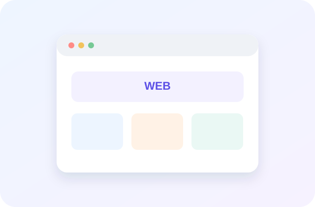
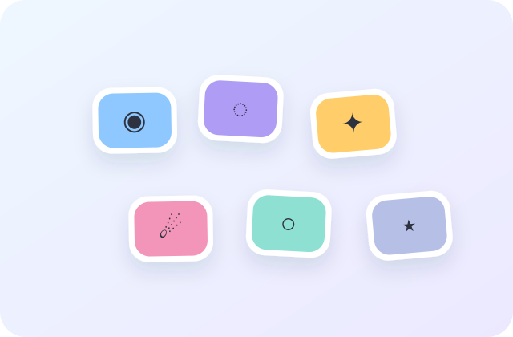

En proceso★☺✿⚡♡☁
Stickers escolares — colección espacial
Proceso completo de concepto, generación con IA, preparación e impresión.
DOMINGO · 9 AGOSTO
Encuentra, reutiliza o documenta cualquier conocimiento de tus negocios desde un solo lugar.
Tus elementos más recientes y pendientes.

En procesoProceso completo de concepto, generación con IA, preparación e impresión.

BorradorPlanificación de 90 minutos con ejercicios, recursos y checklist.

Probadoauth / nextjs prisma adapter role guard()
Repositorio base con login, Prisma, sesiones y protección de rutas.
Basadas en relaciones y uso reciente.
Lo último que cambió.
Editaste Stickers escolares — colección espacialHace 18 min
Relacionaste 2 elementos de Expert CodeHace 2 h
Gemini resumió Clase 08 — Introducción a PythonAyer
BÚSQUEDA INTELIGENTE
Proceso completo para diseñar stickers escolares: concepto, megaprompt, generación visual, selección, ajuste de tamaño y preparación para impresión.
¿Por qué coincide? Contiene un flujo de creación de stickers con IA, prompts reutilizables y pasos específicos de preparación para impresión.
Prompt parametrizable para generar sets coherentes de ilustraciones con fondo limpio, bordes definidos y estilos adaptables.
Coincide con la parte de generación visual mediante IA y está relacionado con 4 procesos de stickers.

Checklist y procedimiento para dimensiones, sangrado, resolución, perfiles y exportación del archivo final.
Complementa el resultado principal con el proceso posterior a la generación.
128 ELEMENTOS
Todo tu conocimiento, procesos, recursos y productos en un mismo lugar.
Proceso completo de concepto, IA, diseño y preparación para impresión.
Plantilla parametrizable para generar colecciones visuales consistentes.
Planificación de 90 minutos con ejercicios, recursos y evaluación.
auth / nextjs prisma adapter role guard()
Repositorio reutilizable con login, sesiones, Prisma y rutas protegidas.

Comparativa de materiales, precios, tallas, contactos y muestras.

Directorio comentado de webs y aplicaciones para dinámicas en clase.
RESUMEN
Colección de stickers para cuadernos inspirada en personajes espaciales amigables. Este documento conserva el flujo completo para repetir el producto sin reconstruir el proceso desde cero.
Proceso reutilizable de diseño de stickers escolares: define concepto, genera ilustraciones con un prompt parametrizable, selecciona resultados y prepara archivos para impresión.
Crear una hoja de 12 stickers coherentes, visualmente limpios y listos para impresión en formato A5.

Escribe / para insertar un bloque o
BUILDER REUTILIZABLE
Empieza rápido con estructuras preparadas y crea las tuyas sin formularios rígidos.
Estructura una sesión con objetivos, duración, recursos, actividades, evaluación y notas.
Diseñadas para tus casos de uso principales.
Selecciona un bloque de la izquierda. Luego podrás reordenarlo y definir contenido inicial.
Abre el Builder para diseñar una estructura personalizada.
CAPTURA PRIMERO · ORGANIZA DESPUÉS
Ideas y recursos que guardaste rápido y todavía necesitan clasificación.
https://ejemplo.com/mockup-shirt · guardado desde captura rápida
Hacerlo en 3 sesiones, incluir GitHub Desktop y un mini proyecto colaborativo.
3.8 MB · documento pendiente de revisar
RECURSOS INCLUIDOS EN EL MOCKUP
Gráficos SVG incluidos físicamente en el proyecto. Puedes reutilizarlos como portada, preview, imagen de galería o referencia sin tener que crear recursos desde cero.
Estos recursos forman parte de la especificación visual. La implementación real debe conservar esta biblioteca inicial y permitir subir recursos propios posteriormente.
SISTEMA
Personaliza el comportamiento sin convertir la aplicación en una consola técnica.
Preferencias básicas del espacio de trabajo.
Colores e identificación visual.
Mantén una clasificación simple y consistente.
Gemini ayuda a describir, organizar, relacionar y buscar sin exponer complejidad técnica.
No necesitas configurar parámetros técnicos para usar la IA.
Los valores avanzados pueden conservar defaults seguros en el backend.
Carga directa y referencias externas.
Formatos disponibles por defecto.
Acceso privado para un único rol.